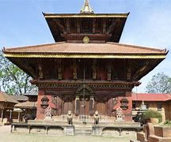

5 . ChanguNarayan Temple
|  |
| district |
Bhaktapur |
| location |
changunarayan VDC, Kathmandu |
| type |
pagoda |
| affiliation |
hindusim |
Changu Narayan temple, the next cultural heritage enlisted in the world heritage list by UNESCO, is considered to be the oldest temple of Nepal. The beautiful change Narayan temple is located on the hill top which is also generally known as changu or dolagiri. The temple is surrounded by the forest with the tree champak and also the small beautiful village named as changu.
Therefore, the temple is situated in the Bhaktapur district in change Narayan VDC of Nepal. Talking about the distance, the temple is located at 12 km east of Kathmandu city and little distance north of Bhaktapur city.
The history of the temples says that the king of Kashmir made his daughter, named as married to the prince of Bhaktapur, hence the temple was named as changu Narayan, after the name of king’s daughter. On the way to reach the temple, the human settlement can be found. Mostly people from the Newar community reside around the temple and village area.
Because the temple is developed as the tourist area, many small and medium-sized hotels, lodges, restaurants are established by various local people. Similarly, several souvenir shops are also set up by the local people that reflect the culture and tradition of the historical period as well as that of the local people.
Besides, on the way to reach the temple, there also lies the ancient stone tap and as per the local people, the tap is believed to have existed since the ancient Lichhavi period.